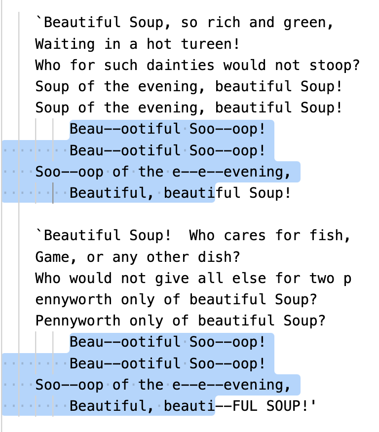
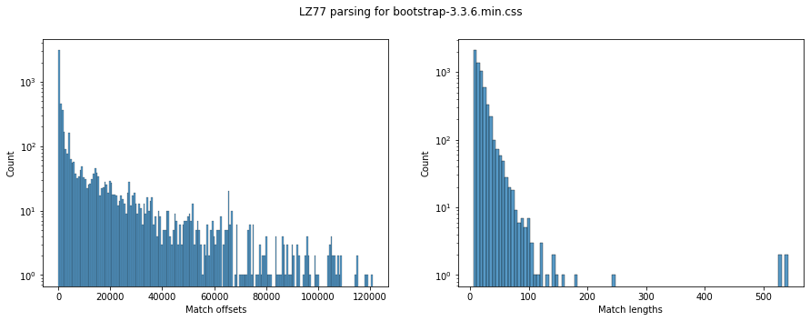

Universal Compression with LZ77
In the previous chapters we talked about entropy rate, which is the fundamental limit of lossless compression for stationary sources. Recall that entropy rate was defined as
and we discussed special cases of entropy rate for iid and Markov sources. For iid sources, the entropy rate is just the entropy of the source, and for a (th order) Markov sources, the entropy rate is the conditional entropy of the next symbol given the past symbols.
We also discussed context based arithmetic coding, based on the fundamental principle that a good predictor induces a good compressor. In particular, we saw that if we have a good predictor for the next symbol given the past symbols, we can use arithmetic coding to achieve the entropy rate for a th order Markov source. We also looked at using LLMs as a predictor achieving incredible compression performance. These schemes can be adapted to achieve the entropy rate for a stationary source by slow growing the context size, however they face issues with efficiency.
Suppose you know your data is 2nd order Markov but not the transition probabilities. You can build a context-based adaptive arithmetic coder with context size 2 and achieve the entropy rate. If you knew the distribution, you don't even need the adaptive part and can just use the known transition probabilities! Now suppose you are not told anything about the source distribution. You could assume a high-order Markov model or maybe try to use LLM based compression, and might get reasonable results in practice. But wouldn't you like a compressor that gives you guaranteed optimality even with such lack of knowledge about the source. That's where universal compressors come in! For a long time, it wasn't known if such a technique even existed - and the world changed after a couple of seminal papers by Jacob Ziv and Abraham Lempel in the late 1970s.
In simple words, a universal compressor is a scheme that does well on any stationary input without prior knowledge of the source distribution. As part of this class of compressors, we will explore one of the most common schemes used in practical compressors.
Universal compressor
Consider a compressor that works on arbitrary length inputs and has length function .
Consider a compressor that works on arbitrary length inputs and has length function . is universal if for any stationary ergodic (ergodicity is a technical condition we won't talk about) source.
So a single compressor is asymptotically optimal for every stationary distribution without prior knowledge of the source distribution! No requirements on the Markov order or anything else.
Thinking in terms of universal predictors, recall from last lecture that a compressor induces a distribution via its length function: . Thus, a universal compressor's approximates any stationary distribution arbitrarily closely as grows (illustrated below). In particular a universal compressor is a universal predictor!
Obviously all this needs to be rigorously formulated, e.g., see the reference below or check out the notes from EE 376C provided in the resources section:
M. Feder, N. Merhav and M. Gutman, "Universal prediction of individual sequences," in IEEE Transactions on Information Theory, vol. 38, no. 4, pp. 1258-1270, July 1992, doi: 10.1109/18.144706.
Lempel-Ziv universal algorithms
As mentioned above, for a long time, the existence of universal algorithms was unknown. Lempel and Ziv, in their seminal papers, showed that there exist universal algorithms for lossless compression. The compressors and their variants used in a variety of commonly used compressors are listed below:
- LZ77: in gzip, zstd, png, zip, lz4, snappy
- LZ78: strong theoretical guarantees
- LZW (Lempel-Ziv-Welch) (LZ78 variant): in linux compress utility, GIF
- LZMA (Lempel–Ziv–Markov chain algorithm) (LZ77 variant): 7-Zip, xz
As you can see, LZ based techniques are used in a variety of general-purpose compressors such as zip as well as in image compressors like png and GIF. For this lecture, we'll mostly focus on LZ77 which is the most commonly used compressor in practice. You can read more about the other techniques in the references below.
References:
- LZ77: Ziv, Jacob, and Abraham Lempel. "A universal algorithm for sequential data compression." IEEE Transactions on information theory 23.3 (1977): 337-343.
- LZ78: Ziv, Jacob, and Abraham Lempel. "Compression of individual sequences via variable-rate coding." IEEE transactions on Information Theory 24.5 (1978): 530-536.
- LZW: Welch, Terry A. "A technique for high-performance data compression." Computer 17.06 (1984): 8-19.
LZ77 algorithm
The idea is simple: "history repeats itself" - if you see something in your input you've probably seen that before. So just replace repeated segments in data with pointers and lengths! Whenever you see a sequence you have seen before, you encode it in terms of when you saw it last and it's length. Consider the popular song lyrics below which are very conducive to this form of compression!
LZ77 parsing
LZ77 compression involves parsing the input text into a sequence of matches to the past. This is done by generating three streams: unmatched literals, match length and match offset. Let's try to understand the parsing through an example. Consider the input sequence: ABBABBABBCAB
We will fill in the table below, to store any unmatched portions followed by the match length (how long the match is) and the match offset (how far back the match is).
| Unmatched literals | Match length | Match offset |
|---|---|---|
| - | - | - |
| - | - | - |
| - | - | - |
We start from the left and note that the first two characters don't have a match in the past. So we store them as unmatched literals. The third character (B) does match the character right before. If we try for a longer match, that doesn't work because the third and fourth characters BA haven't been seen in the past. So we get
A[B]BABBABBCAB
| Unmatched literals | Match length | Match offset |
|---|---|---|
| AB | 1 | 1 |
| - | - | - |
| - | - | - |
Next we observe the fourth character A has a match in the past so we try to extend to a longer and longer match. We see that ABB matches the ABB seen three positions ago. Looking ahead, we see that the ABB actually matches the ABB in the current match so effectively you have a match of length 6 (ABBABB). This might look suspicious at first glance since our match overlaps itself. But we'll see that this is fine and we will be able to decode. So we get (note there were no unmatched literals this time around):
[ABBABB]ABBCAB
| Unmatched literals | Match length | Match offset |
|---|---|---|
| AB | 1 | 1 |
| - | 6 | 3 |
| - | - | - |
And moving on in the same way, we get the full LZ77 parsing for this input as:
ABBABB[AB]BCAB
| Unmatched literals | Match length | Match offset |
|---|---|---|
| AB | 1 | 1 |
| - | 6 | 3 |
| C | 2 | 4 |
This can be decoded in the same exact order (left as an exercise, do check we can unparse the overlapping match!). To make this a little formal, let's write out a pseudocode for the parsing and unparsing algorithms.
For input sequence x[0], x[1], ...
Suppose we have parsed till x[i-1].
- Try to find largest k such that for some j < i
x[j:j+k] = x[i:i+k]
- Then the match length is k and the match offset is i-j
[note that the ranges j:j+k and i:i+k are allowed to overlap]
- If no match found, store as literal.
At each step:
- First read any literals and copy to output y.
- To decode a match with length l and offset o.
- If l < o:
- append y[-o:-o+l] to y
- Else:
// Need to be more careful with overlapping matches!
- For _ in 0:l:
- append y[-o] to y
The two cases are as illustrated below:
o
◄────────────────────────────►
────────────────────────────────────────
◄────────► ◄────────►
l l
Non-overlapping match l < o
o
◄──────►
─────────────────────────────────────────
◄──────────────►
◄─────────────►
l
Overlapping match l >= o
Some observations:
- Decompression/unparsing is very fast since it just involves copying! This is a major advantage of LZ77 based techniques over context based coding methods where decompression is quite symmetric to compression due to the same predictor being used.
- The parsing can be done in various ways while still being compatible with the unparsing algorithm. This is unlike context based coding methods where the encoding and decoding algorithms are tightly coupled. Thus you can spend more time or less time finding matches and the same decoder (unparser) will work! This makes the same format compatible with a variety of different encoder implementations. An extreme example of a parser is one that doesn't try to match anything and simply writes out everything as a literal. The other extreme is a parser that attempts to use dynamic programming to find the optimal parsing with the fewest literals (e.g., see this blog post)!
- As we observed above, allowing overlapping matches is a parser choice that enables better compression for highly repetitive sequences. However, this requires support in the parser and unparser and some implementations might not support this. In particular other LZ variants like LZ78 do not allow overlapping matches, leading to worse performance for highly repetitive sequences since you cannot exploit such long matches.
Apply the above parsing and unparsing algorithms for the following:
- Parse AABBBBBBBAABBBCDCDCD.
- Unparse the below table (note that this parsing was generated using a different parser than the one described above!):
| Unmatched literals | Match length | Match offset |
|---|---|---|
| AABBB | 4 | 1 |
| - | 5 | 9 |
| CDCD | 2 | 2 |
Encoding step
┌─────────────┐ ┌──────────────┐ ┌───────────┐ ┌──────────┐
┌──────────┐ │ │ │ Literals │ │ Entropy │ │Compressed│
│Input data├───────►│LZ77 parsing ├─────►│ ├─────►│ coding ├────►│ │
└──────────┘ │ │ │ Matches │ │ │ │ File │
└─────────────┘ └──────────────┘ └───────────┘ └──────────┘
Now let's look at the end-to-end flow for LZ77 compression. As discussed above the first step is parsing which produces the literals, match lengths and match offsets. However, we still need to encode these streams into bits to get the final compressed file. Different implementations (gzip, zstd, etc.) differ in the approach, and we typically use Huffman coding/ANS with some modifications to optimize for real-life data. We will go into the details in the sections below after covering the universality proof.
LZ77 universality proof sketch
Let's try to intuitively understand why LZ77 is universal. First let's understand how far apart do we expect matches to be.
Consider an i.i.d. sequence
If symbol has probability , what's the expected gap between consecutive occurences of ?
Hint: In a block of size , how many times do you expect to see ? What's the average spacing between the occurences?
Answer: (using law of large numbers and the iid-ness): You expect to see around times, and the average spacing is . Recall that this is also the mean of a geometric random variable with parameter .
Surprisingly this simple formula applies more generally to -tuples in a stationary ergodic process.
Let be a stationary ergodic process and let be the recurrence time (last time occurred before index ). Given that , we have
In simple words, if , the same sequence also occurred roughly positions ago. Thus, the match offset in LZ77 is on average.
Now with this knowledge, let's try to understand how well LZ77 compresses by looking at the various components:
- We can encode the match offset using close to bits using an appropriate integer coder (e.g., check out the Elias Delta code in SCL).
- Match length and literal contribution is negligible! The lengths can be encoded in logarithmically many bits as the total sequence length, while the literals are expected to die out as we go further in the sequence (since matches get longer and longer).
- Expending bits means we are following the thumb rule, and we use on average
- Taking this to the limit, we can see that LZ77 achieves the entropy rate!
As you might have noticed, this is extremely hand-wavy and glosses over a lot of details. For a more detailed and rigorous proof, check out Cover and Thomas chapter 13, the EE 376C notes provided in the resources section, or the original paper below:
A. D. Wyner and J. Ziv, "The sliding-window Lempel-Ziv algorithm is asymptotically optimal," in Proceedings of the IEEE, vol. 82, no. 6, pp. 872-877, June 1994, doi: 10.1109/5.286191.
The LZ77 proof is not as satifying from a theoretical standpoint as compared to LZ78 (covered in the EE376C notes), but in practice LZ77 based techniques dominate due to their compression and computational efficiency on real-life datasets. In fact, the asymptotic theory doesn't fully explain the excellent performance in practice. If you think of a th order Markov process, you expect LZ77 to do well in the limit, but not amazing for reasonable sized data due to the poor convergence rate. However, the idea of finding matches is just very well-matched to real-life data and the data is not always modeled easily as a th order Markov process. For example, we see much more frequent and longer repeats in real data (e.g., English text) compared to what you'd expect from a Markov process. This often leads to LZ77 based techniques outperforming other techniques in practice for a variety of datasets.
LZ77 parsing on real data - examples
Before we jump to more details about practical LZ77 implementations, let's gain some intuition of how matches look in practice and how the match lengths and offsets are typically distributed. We will use the LZ77 implementation in SCL for this purpose.
Consider the text of "Alice's Adventures in Wonderland" by Lewis Carroll where we see some long matches. You can imagine LZ77 getting amazing compression here by replacing this entire repeated segment with just the offset and the length which can be encoded in very few bits.
This is not an isolated example - consider the CSS file for the bootstrap website where we again see long matches.
It is easy to fall under the misapprehension that only long matches help with compression, or that we need the offset to be very small to get gains. But that's not the case. Even a match of 5-10 characters with a large offset can be encoded more efficiently than storing it as a literal. This is because the space needed to store the offset and the length is logarithmic in the integer values, meaning that even offset of a million can be encoded in about 20 bits. Whereas even if you encoded a character with just 3 bits (using, e.g., Huffman coding), you would need 30 bits to encode the literal! For example, as shown below, the word pleasure occurs only twice in the book "Alice's Adventures in Wonderland" 150 KB apart and you would still expect it to be cheaper to encode it as a match of length 8 and offset 150 KB rather than as literals. You can also imagine there is a break-even point for this, and matches with very large offsets and/or small lengths might not help with compression.
First page:
So she was considering in her own mind (as well as she could,
for the hot day made her feel very sleepy and stupid), whether
the **pleasure** of making a daisy-chain would be worth the trouble
of getting up and picking the daisies, when suddenly a White
Rabbit with pink eyes ran close by her.
Last page:
, and make THEIR eyes bright and eager
with many a strange tale, perhaps even with the dream of
Wonderland of long ago: and how she would feel with all their
simple sorrows, and find a **pleasure** in all their simple joys,
remembering her own child-life, and the happy summer days.
THE END
Let's look at the full match length and offset distributions for these two files. Note that the distribution heavily depends on the particular parsing strategy used, but we can still get some insights from these plots. As we see below, the distributions vary from file to file, and suggests that the different parsing strategies and entropy coding techniques can be adapted to the specific dataset for best performance.

Looking at the distributions for the Alice in Wonderland text, we see that the match offsets largely fall in the small-ish range, but there are some large offsets as well (even as large as the file size of 150 KB). Similarly, the match lengths are mostly less than 50, though we do see some matches around length 200 as well.

For the bootstrap CSS file, we see a similar trend with most offsets being small, but some large offsets as well. The match lengths are generally larger than the Alice in Wonderland text, which makes sense since CSS files have a lot of repeated patterns (function names, variable names, etc.). Some matches are as long as 500 characters.
Practical considerations for LZ77 implementations
The pseudocode we saw above was a very simplistic version of LZ77. In practice you would run into several issues. How much past do you need to remember? How do you actually find the matches efficiently? What entropy coders should you use for the literals, match lengths and offsets? Let's look into these and understand at least the basic considerations. Practical implementations of LZ77 like gzip and zstd include several optimizations to make them fast and efficient, which we will not cover in any detail.
Sliding window
The algorithm as presented above assumes infinite past memory for both the parsing and the unparsing, since the match offsets are allowed to be arbitrarily large. This is obviously not practical for large files. In practice, we use a sliding window - only find matches in past 10s of KBs (gzip) to multiple MBs (zstd) window (with the progress of time, as memory available on machines has increased, compressors have started using larger and larger windows). The window is typically implemented using a circular buffer to efficiently handle windows without reallocation. Bigger window gives better compression but needs more memory for both compression and decompression. For a well-documented and minimal implementation, we encourage the reader to look at the implementation in SCL, in particular the LZ77Window, LZ77SlidingWindowEncoder and LZ77SlidingWindowDecoder classes.
The figure below shows the effect of window size for the Alice in Wonderland text. We see that increasing the window size helps with compression (leveling off above the file size as expected). Depending on the dataset, the effect can be more or less pronounced.
Match finding
The algorithm pseudocode above glossed over the details of how to find matches efficiently, just saying that "find the longest match". A brute-force approach would be to check all past positions for a match, but that would be very slow (quadratic time). The nice thing about LZ77 is that the parsing and unparsing are decoupled, so we can use any match finding strategy we want withut affecting the decoder performance or implementation.
The basic idea is to index past occurences of sequences (e.g., 4-length substrings) in a data structure like a hash table or a binary tree. For example, you could store that ABCD occurred at positions [1, 10, 15] while ABAB occurred at positions [2, 6]. Then for the given position where we are trying to find matches, we determine the current 4-length substring. Then we do a lookup to find previous occurences. There can be multiple places where the substring could have occurred, and we then extend each of the candidate matches to find the longest match. Using the 4-length substring allows us to efficiently index and reduce the search space, however it forces the minimum match length we would get to be at least 4. A smaller substring could give you more false positives and increase the time complexity for searching the longest match, but can give better compression in some cases.
In the above approach, we simply look for the longest match meaning this is a greedy strategy. But we could consider a different strategy to get longer matches. For example, we could incur a literal to find a longer match at the next position (e.g., lazy strategies don't immediately take a match, instead look ahead to find if there's a longer one). Let's consider an example for this. Suppose the next section to compress involves ABCDEF and you get a match in the past [AB]EF of length 2. A greedy strategy would take this match of length 2. But a lazy strategy could say, wait a second, if I skip this match and encode A as a literal, can I get a longer match starting a B (e.g., if [BCDEF] occurred in the past). Existing LZ77 strategies range from fast and greedy to slow and optimal (e.g., using dynamic programming to find the "optimum" parsing under some definition of optimality). The choice of match-finding strategy affects both speed and compression performance, but usually doesn't affect the decompression.
The SCL implementation allows the user to pass the match finder as a parameter to the LZ77SlidingWindowEncoder class. The match finder is a subclass of MatchFinderBase and implements the find_best_match and extend_match methods as shown below. The HashBasedMatchFinder class implements a hash based match finder with several parameters to control the parsing strategy as shown below, but you can implement your own match finder as well!
class LZ77SlidingWindowEncoder:
- match_finder: Match finder used for encoding (not required for decoding)
- window_size: size of sliding window (maximum lookback)
class MatchFinderBase:
def extend_match(
self, match_start_in_lookahead_buffer, match_pos, lookahead_buffer, left_extension=True)
def find_best_match(self, lookahead_buffer)
class HashBasedMatchFinder(MatchFinderBase):
- hash_length (int): The length of byte sequences to hash.
- hash_table_size (int): Size of the hash table.
- max_chain_length (int): Maximum length of the chains in the hash table.
- lazy (bool): Whether to use lazy matching where LZ77 considers one step ahead and skips a literal if it finds a longer match.
- minimum_match_length (int): Minimum length of a match to be considered.
Let's look at some real data on the effect of minimum match length and lazy parsing strategies on compression performance.

The figure above shows the effect of minimum match length on the contribution of matches and literals as well as the overall compression performance. As the match length increases, we that the literals take up more space since we are ignoring matches of smaller lengths. Whereas the matches take up less space. Overall we see there is a break-even point since having the minimum match length too small leads to poor compression (due to overhead of storing many small matches) while having it too large also leads to poor compression (due to ignoring many matches). As you might imagine the time complexity will also vary with the minimum match length since smaller lengths lead to more candidate matches to check.

The figure above compares the lazy and greedy strategy at various values of minimum match length. We see the lazy strategy consistently outperforms the greedy strategy. At smaller minimum match lengths, the gap is even larger since the greedy strategy can fall in the trap of taking many small matches while the lazy strategy can skip them to find longer matches.
Entropy coding
For entropy coding, the different streams (literals, match lengths, match offsets), a standard strategy (used in zstd but not gzip) is to concatenate all literals into a single stream and separately keep the literal counts. See below for an example.
| Unmatched literals | Match length | Match offset |
|---|---|---|
| AABBB | 4 | 1 |
| - | 5 | 9 |
| CDCD | 2 | 2 |
encoded as
literals = AABBBCDCD
and
| Literal counts | Match length | Match offset |
|---|---|---|
| 5 | 4 | 1 |
| 0 | 5 | 9 |
| 4 | 2 | 2 |
Now each of streams can be encoded using various entropy coding approaches. In fact, you can imagine LZ77 just converting the complex stationary source into three simpler iid-like sources which can be encoded using standard entropy coding techniques discussed below. One general principle, based on experimental data, is that for literals it is often sufficient to use something like Huffman coding (which is also super-fast), while the lengths and offsets can benefit from more sophisticated coders like tANS or arithmetic coding.
- Huffman coding - this can be dynamic (codebook is constructed during encoding time) or static (codebook is fixed a priori based on some predefined data distribution).
- gzip exclusively relies on this
- zstd - uses Huffman only for literals
- tANS: zstd uses tANS for literal lengths, match lengths and match offsets
- Context-based arithmetic coding (slower to encode and decode but better compression): LZMA, xz, 7-zip
- For very high speeds, skip entropy coding and use fixed length codes! (LZ4, Snappy)
Entropy coding of integers
While literals are from a small alphabet (e.g., all 256 possible bytes), lengths and offsets have a large range (offsets be even be in millions). Naively applying Huffman coding or ANS on such a large alphabet is inefficient due to lack of counts (e.g., a specific match offset like 14546 might not occur many times). The typical approach is to divide the integers into bins: (i) entropy code the bin index and (ii) encode the position in bin using plain old fixed length code. The binning is often logarithmic in nature, so you could have bins like 1, 2-3, 4-7, 8-15, and so on. If you are in bin 8-15 then you use 3 bits to encode within bin position. The bin index represents the logarithm, while the position in the bin represents the lower order bits. The binning is again a design choice, although logarithmic binning tends to work decently well. One way to imagine this is as a prefix tree where you first have the bins as leaves and then attach a complete binary tree to each of these (as illustrated in the figure below).

You can check the binning table for zstd here. As you can see the smaller bins are divided a bit more finely (e.g., 32-39, 40-47, etc.) while the larger bins are coarser and actually logarithmic (e.g., 2048-4095, 4096-8191, etc.). This is because smaller integers occur more frequently and need to be represented more finely for better compression (since the index within bin is stored with simply fixed bitwidth all the fancy entropy coding is confined to the bin index). You can also check out LogScaleBinnedIntegerEncoder in the SCL LZ77 implementation for a simple reference (binning table and number of bits for offset within bin shown in table below).
| Bin range | Number of values in bin | Number of bits for offset within bin |
|---|---|---|
| 1 | 1 | 0 |
| 2-3 | 2 | 1 |
| 4-7 | 4 | 2 |
| 8-15 | 8 | 3 |
| 16-31 | 16 | 4 |
| 32-63 | 32 | 5 |
| 64-127 | 64 | 6 |
| 128-255 | 128 | 7 |
gzip and zstd
For a very long time (~mid-1990s to mid-2010s), gzip was the most commonly used general-purpose compressor. It is based on LZ77 with Huffman coding for entropy coding. However, with the advent of zstd in mid-2010s, which uses several more modern techniques (e.g., tANS entropy coding, efficient implementation using SIMD vectorization, larger windows, better match-finding strategies), zstd has started to replace gzip in many applications due to its better compression and speed. Today, except for highly resource constrained environments or legacy settings, zstd is often the default choice for general-purpose compression. Although it does consume slightly more memory than gzip, this is rarely a concern on modern machines.

The figure above (source) compares the compression ratio, compression speed and decompression speed of zstd and gzip (labeled zlib in the figure). In the compression speed vs. ratio plot, the different "levels" (mainly determining the match-finding strategy and window size) are shown for both compressors. As seen in the figure, zstd achieves a better pareto frontier than gzip, being faster than gzip at similar compression ratios. In addition zstd achieves higher compression ratio/speed at the higher/lowest level, meaning it can be used in wider applications.
Looking at the decompression speed, we see that while gzip is decently fast, zstd achieves extremely high decompression speeds. This is because all aspects of zstd's design, including the format itself, are optimized for fast decompression. For example the format is constructed in a way that a decoder can avoid branching as much as possible, leading to better pipelining and vectorization opportunities in modern processors. Similarly efforts are made in the implementation to be cache friendly and use SIMD instructions to speed up operations. Overall zstd is a great example of how careful design and implementation can lead to significant performance improvements in practice. Looking at LZMA (which use context-based arithmetic coding) in the decompression speed plot, we see that it is significantly slower than both gzip and zstd, which is why it is not commonly used for general-purpose compression despite its good compression performance. Notice that the decompression speed doesn't include the levels, this is because the decompression speed is largely unaffected by the compression level since the same decoder is used for all levels.
The figure below (source) shows a wider variety of LZ77 implementations at different levels, we'll look in the next chapter on how to make informed choices between these.

Summary
In this chapter we covered the LZ77 algorithm, it's universality proof sketch and practical considerations for implementation. We saw that LZ77 based techniques are widely used in practice due to their good compression and speed performance on real-life datasets. We also saw that several design choices (window size, match-finding strategy, entropy coding approach) affect the performance of LZ77 implementations.
Before we wrap up, let's understand that universal doesn't mean perfect. LZ77 is universal in an asymptotic sense, but need not be the best choice for a given dataset. Even if it is ideal, there are things to consider beyond the compression rate - speed, memory usage and so on. And as discussed above choices made in LZ77 implementations play a big role in its performance.
That's basically it for LZ77! In the next chapter, we will wrap up lossless compression and suggest some practical tips when it comes to selecting a lossless compressor your data. A few parting notes on further reading:
- We didn't talk about LZ78 and LZW - similar core ideas but slightly different tree-based parsing method
- For LZ78, possible to prove very powerful universality results, including non-asymptotic ones!
- In particular can show that LZ78 gets compression rate within of the optimal th order model for any sequence.
- For a more theoretical treatment, check out the EE376C notes in the resources section.
- There is much more on LZ77 we didn't cover (e.g., repcodes, optimal parsing). Information about these can be found in certain blogs in the resources section or in the actual implementation/documentation of compressors like zstd.